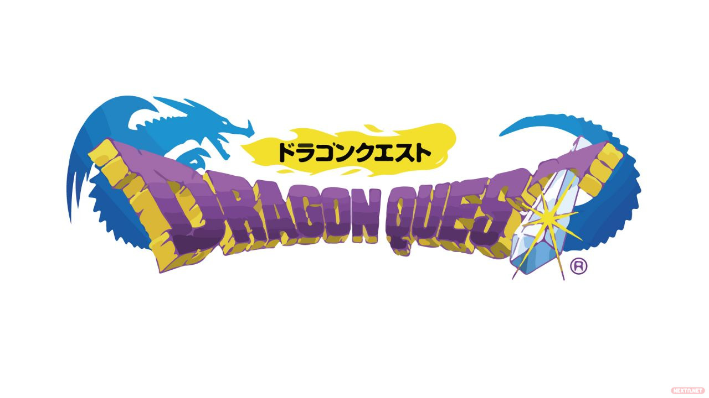
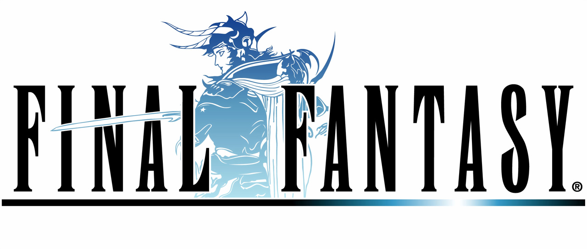
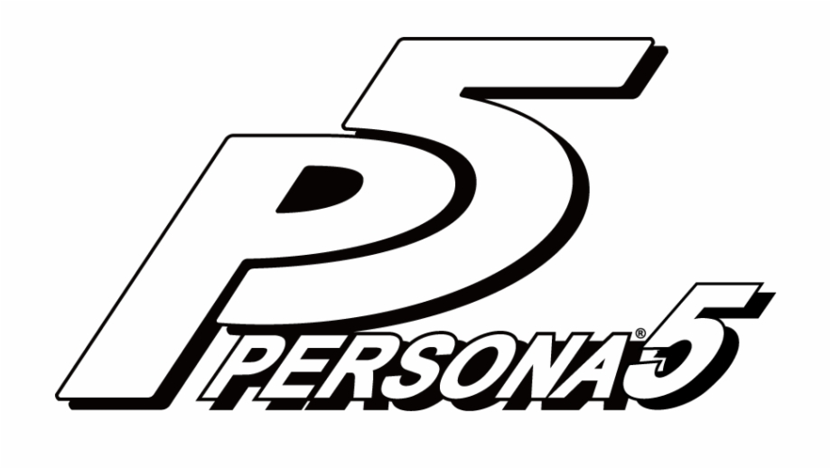

| Recopilación de canciones de JRPG's |
RPG |
| JRPG:RPG de corte nipón. Tienen sistemas de combate visualmente impactantes. |
RPG: Son los creados en occidente, tanto Europa como Estados Unidos. Suelen tener tramas mas profundas en comparación a los juegos japoneses. |
| Los protagonistas suelen ser jóvenes con algún tipo de poder extraño, que los haces sobresalir de los demás. |
Los protagonistas suelen ser gente aventurera y preparada, pueden tener algún poder extraño, pero no suele ser necesario. |
| JRPG's según estilo |
Fantasía |
Pop |
Dragon Quest  |
Nier Automata  |
Final Fantasy  |
Realista |
| Danganronpa |
Persona 5 |
Yakuza 6 |
Modernos |
|